V14 · VISUAL TEST
照片插画样例
4:3 固定 SVG 插画，给“他发来一张照片”做视觉测试。图片本身不含文字，地点、时间和说明由聊天卡片叠加，所以同一张图可以重复使用。
10 张样例
洗澡 · 健身
吃饭 · 4 种
风景 · 4 种
SVG · 可无损缩放
聊天里的样子
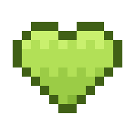
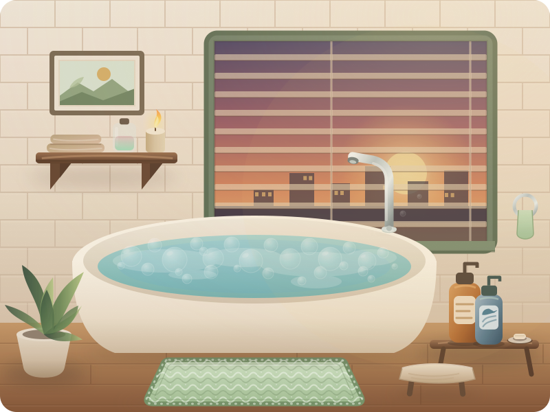
刚洗完，今天好累19:20
洗澡 · 傍晚
百叶窗和泡泡浴
晚霞百叶窗、壁架、盆栽、蜡烛、两瓶沐浴露和长方形防滑垫。浴
查看原图 ↗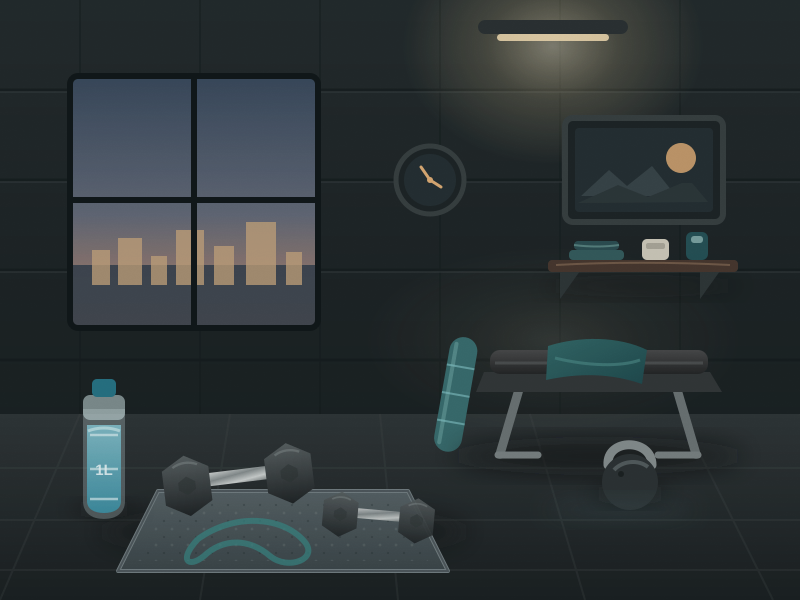
健身
哑铃和 1L 水壶
深色橡胶地面、训练凳、毛巾和傍晚窗光。水壶上保留了 1L 标记，方便一眼看懂。
查看原图 ↗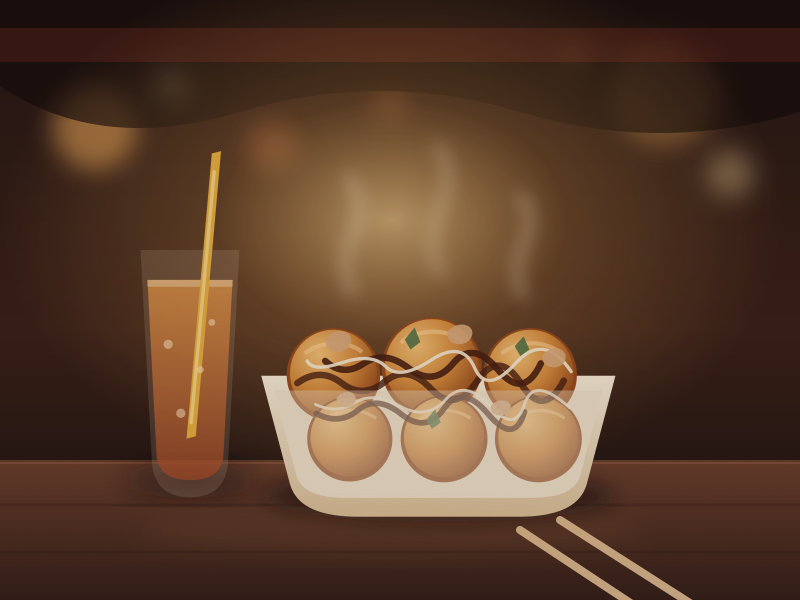
吃饭
小吃 · 章鱼小丸子
暖色夜市灯、纸托、酱汁和木鱼花。适合“路过买点吃的”这种很轻的场景。
查看原图 ↗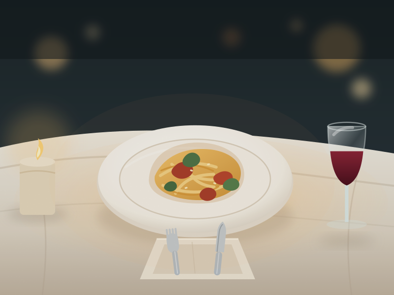
吃饭
正式晚餐 · 意面
白桌布、意面、红酒、刀叉和蜡烛。适合约会、纪念日或“今天吃得正式一点”。
查看原图 ↗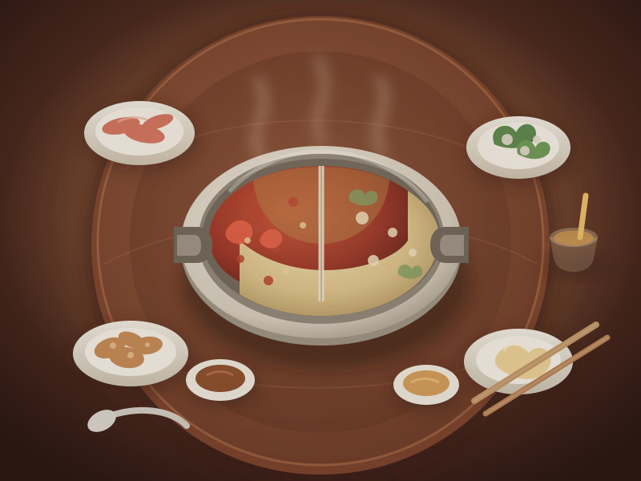
吃饭
大餐 · 鸳鸯火锅
俯视圆桌构图，中间是鸳鸯锅，周围摆满肉片、蔬菜、蘑菇、饺子和蘸料。
查看原图 ↗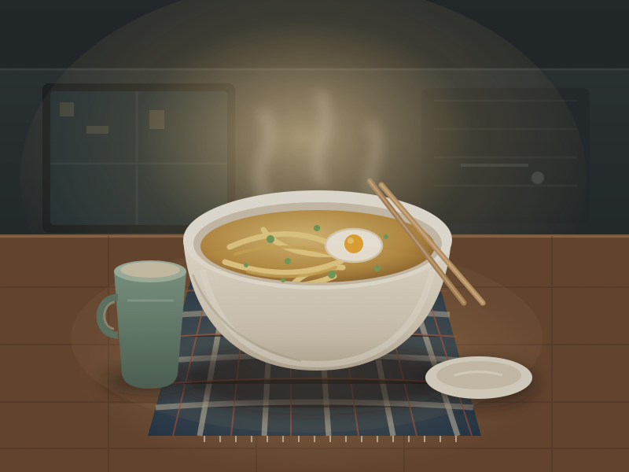
吃饭
随便应付 · 泡面加蛋
深夜厨房、一碗泡面、一个蛋和一杯热水。适合“今天太累了，随便吃点”。
查看原图 ↗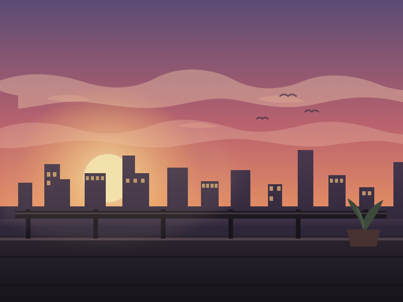
风景
晚霞 · 天台
橙粉色天空、城市剪影和前景栏杆。栏杆把画面压住，更像站在天台拿手机拍的。
查看原图 ↗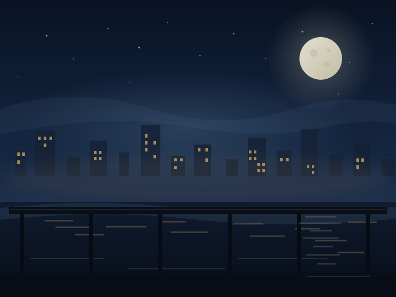
风景
城市夜景
深蓝夜空、月亮、楼群窗灯和江面倒影。前景栏杆和远处灯光拉开层次。
查看原图 ↗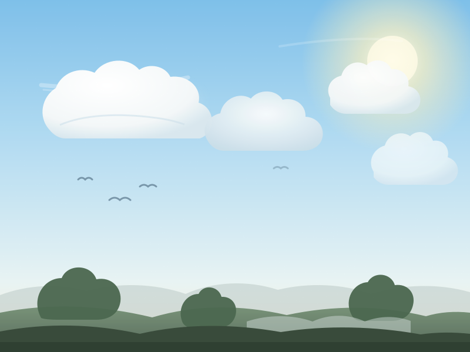
风景
天空 · 大朵白云
午后蓝天、积云、飞机云和飞鸟。底部只留一点屋顶和树，让画面保持开阔。
查看原图 ↗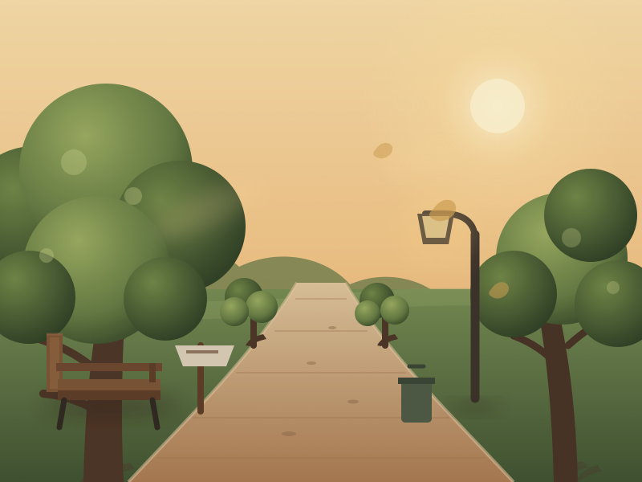
风景
散步 · 公园小路
金色阳光、树影、长椅和路灯。小路向前收窄，适合“下班后走一走”的场景。
查看原图 ↗